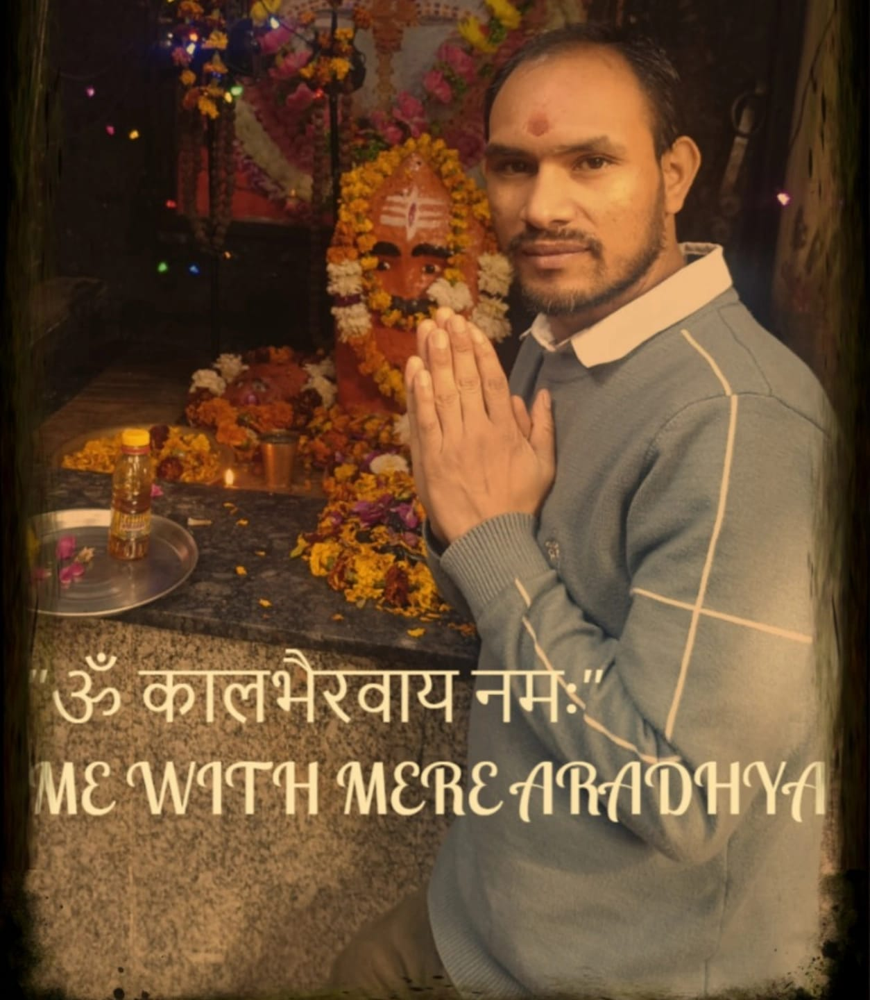
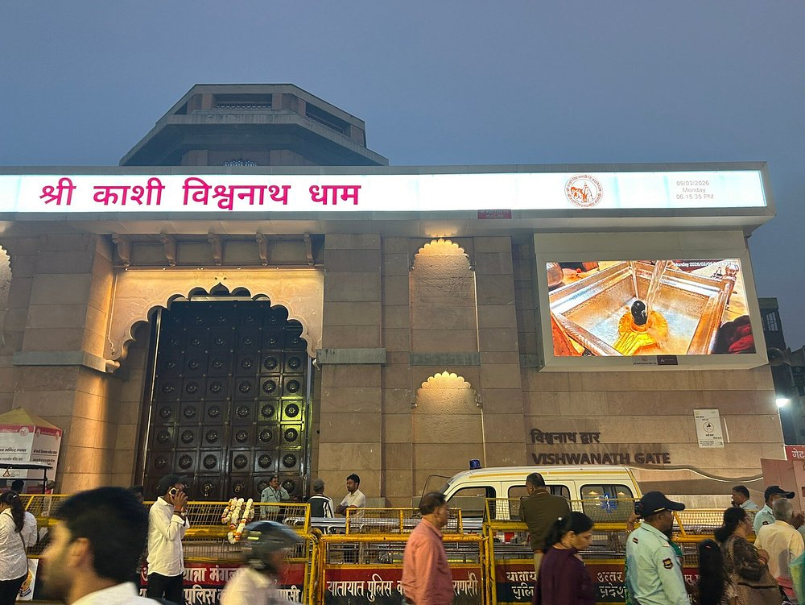
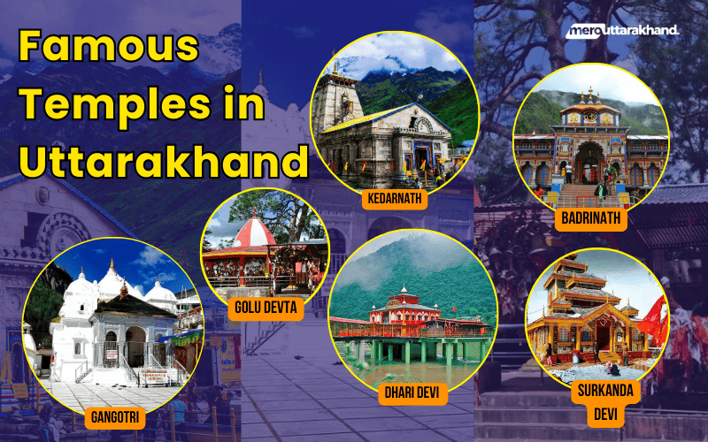
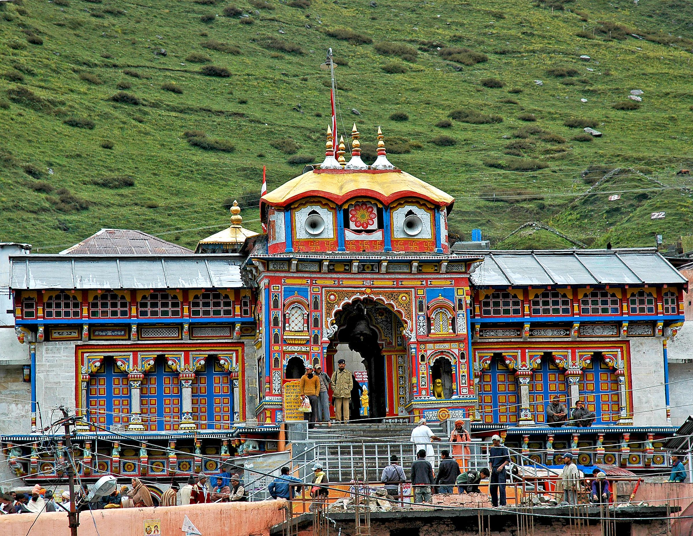
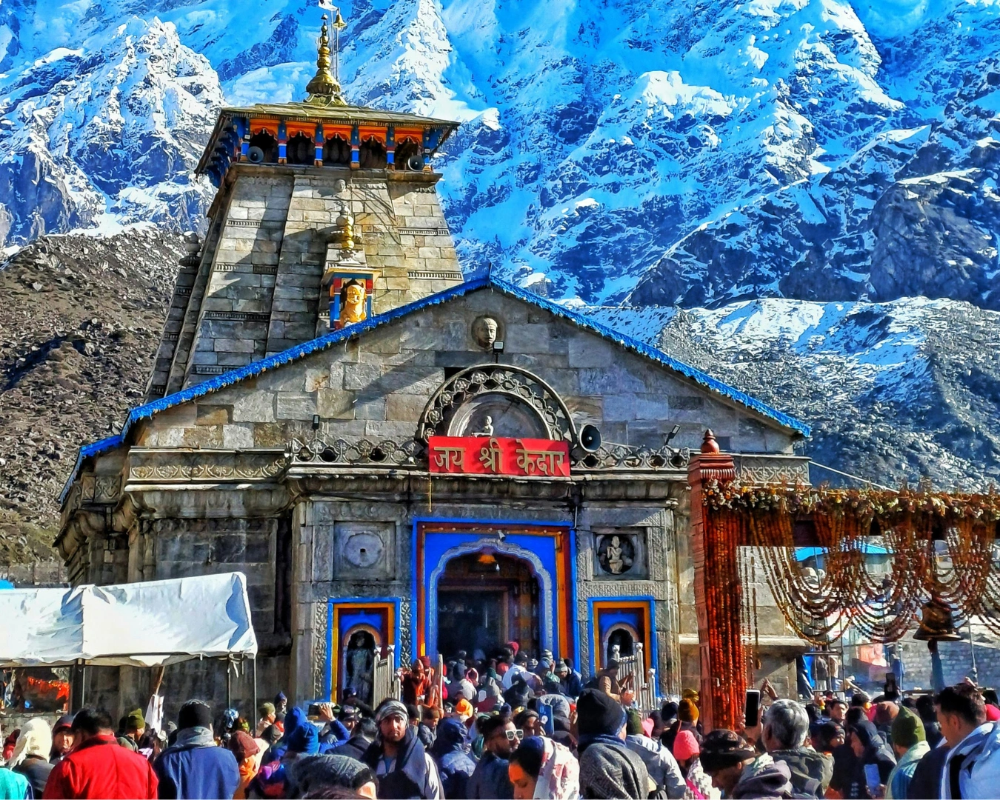
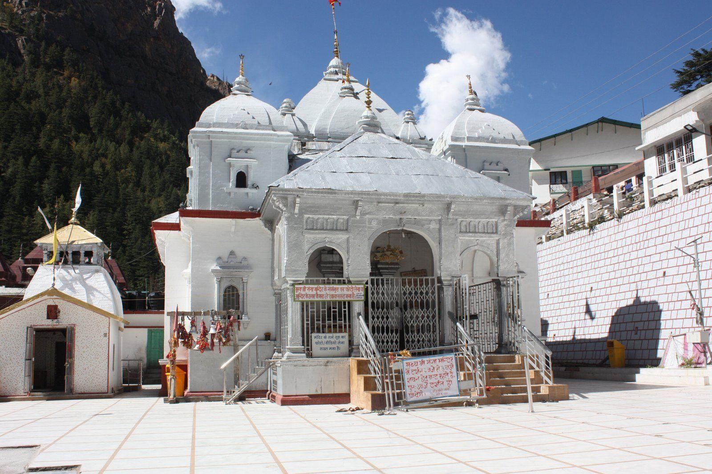
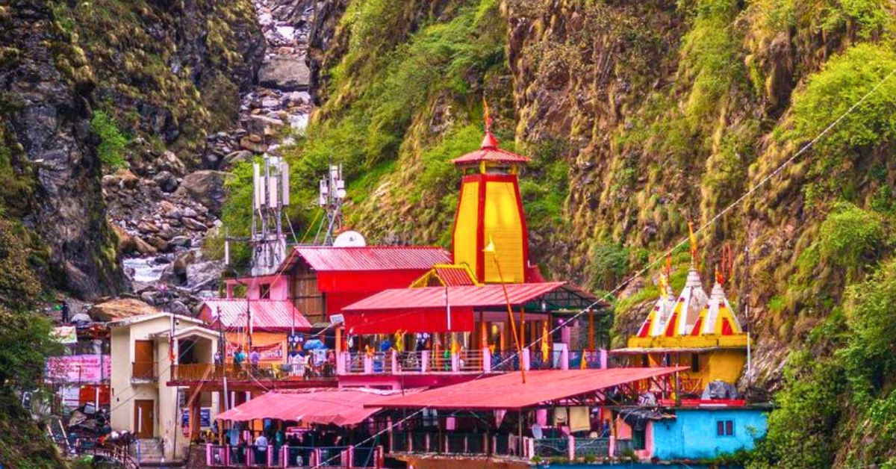
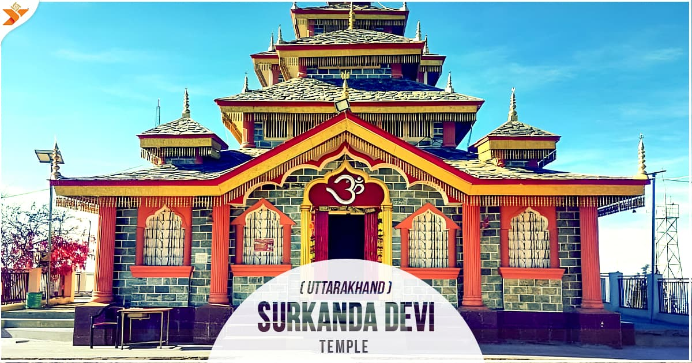
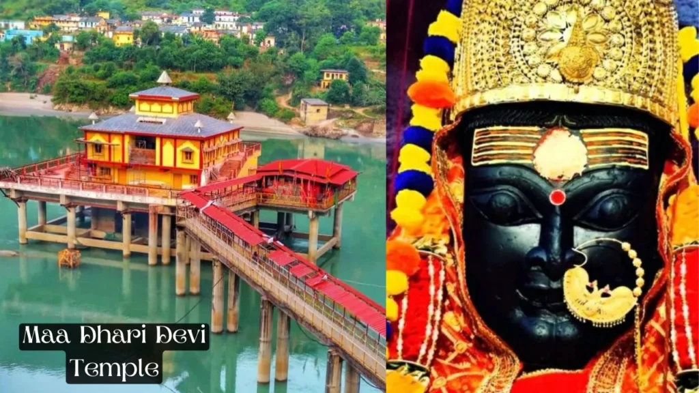

🔱 Jai Shree Kaal Bhairav 🔱



काशी, जिसे वाराणसी या बनारस के नाम से भी जाना जाता है,
एकयह दुनिया के सबसे पुराने जीवंत शहरों में से एक है और भारत का एक प्रमुख आध्यात्मिक केंद्र है,
जो उत्तर प्रदेश में गंगा नदी के किनारे स्थित है।"प्रकाश के शहर" के रूप में और पवित्र काशी विश्वनाथ मंदिर के घर के रूप
में, यह एक प्रमुख तीर्थ स्थल है जहां भक्त मोक्ष की तलाश करते हैं और अनुष्ठान करते हैं

नरसिंह मंदिर, जोशीमठ, उत्तराखंड में हैभगवान नरसिम्हा को समर्पित एक पवित्र 8वीं शताब्दी का
मंदिर, जो विष्णु के चौथे, आधे सिंह, आधे मनुष्य अवतार हैं।सप्त बद्री के एक भाग के रूप में,
यह बद्रीनाथ के लिए शीतकालीन निवास के रूप में कार्य करता है, जहां मुख्य मंदिर बंद होने पर भगवान बद्रीनाथ की मूर्ति को लाया जाता है और उसकी पूजा की जाती है
काशी के काल भैरव (वाराणसी)भगवान शिव का एक उग्र और रक्षा करने वाला रूप है, जिसे 'काशी का कोतवाल' या 'नगर रक्षक' के रूप में जाना जाता है।ऐसा माना जाता है
कि बाबा विश्वनाथ के दर्शन से पहले काल भैरव के दर्शन करना अनिवार्य है। यह प्राचीन मंदिर वाराणसी के विश्वेश्वरगंज के पास स्थित है
और ऐसा माना जाता है कि यह काशीवासियों के पापों को नष्ट करता है

भगवान गोलू उत्तराखंड के कुमाऊं क्षेत्र के एक अत्यंत पूजनीय लोक देवता हैं।भगवान शिव का अवतार (गौरभैरव)और उन्हें 'न्याय और फैसले का देवता' माना जाता है।
वे शीघ्र न्याय दिलाने के लिए जाने जाते हैं और भक्त अपनी मनोकामना पूरी होने की प्रार्थना में अल्मोड़ा के चिताई मंदिर में पत्र और घंटियाँ चढ़ाते हैं

उत्तराखंड, जिसे देवभूमि (देवताओं की भूमि) के नाम से जाना जाता है,इसका समृद्ध इतिहास प्राचीन वैदिक,
मध्यकालीन और आधुनिक काल तक फैला हुआ है।ऐतिहासिक रूप से गढ़वाल और कुमाऊं में विभाजित इस क्षेत्र पर पहले कट्यूरी, चंद और
परमार जैसे राजवंशों का शासन रहा, फिर गोरखाओं और बाद में अंग्रेजों के अधीन आ गया। 9 नवंबर 2000 को यह भारत का 27वां राज्य बना।
प्राचीन इतिहास
पौराणिक महत्व: हिंदू धर्मग्रंथों में केदारखंड (गढ़वाल) और मानसखंड (कुमाऊं) के रूप में वर्णित, यह माना जाता है कि यह पांडवों का वनवास के दौरान निवास स्थान था।
प्रारंभिक निवासी: यह क्षेत्र कोल, किरात और खासा जैसी जनजातीय समूहों द्वारा बसा हुआ था।.
प्रारंभिक राजवंश: कुनिंद (दूसरी शताब्दी ईसा पूर्व) इस क्षेत्र के पहले प्रमुख शासक थे, जो शैव धर्म का पालन करते थे।
बौद्ध धर्म और साम्राज्य: कालसी में अशोक के शिलालेख बौद्ध धर्म के प्रभाव को दर्शाते हैं, जबकि बाद में यह क्षेत्र गुप्त साम्राज्य के अधीन आ गया।
Wikipedia
Wikipedia
+4
मध्यकालीन इतिहास
कात्युरी राजवंश: 7वीं और 11वीं शताब्दी के बीच उत्तराखंड के अधिकांश भाग पर शासन किया, इस दौरान उन्होंने कई मंदिरों का निर्माण किया और ऐतिहासिक बस्तियों की स्थापना की।
चंद वंश (कुमाऊं): पिथौरागढ़ में अपना प्रभुत्व स्थापित किया और बाद में कात्युरी वंश के पतन के बाद कुमाऊं के अधिकांश भाग पर शासन किया।
गढ़वाल साम्राज्य: 15वीं शताब्दी में, राजा अजयपाल ने विभिन्न छोटी रियासतों (गढ़ों) को एकीकृत करके गढ़वाल का एक राज्य बनाया, जिसकी राजधानी प्रारंभ में चांदपुरगढ़ थी।
आधुनिक इतिहास
गोरखा शासन: नेपाल के गोरखाओं ने कुमाऊं (1790) और गढ़वाल (1804) दोनों पर विजय प्राप्त की और क्रूरतापूर्वक शासन किया।
ब्रिटिश काल: अंग्रेजों ने 1815 में गोरखाओं को खदेड़ दिया, जिसके परिणामस्वरूप सुगौली की संधि हुई।
इस क्षेत्र को ब्रिटिश गढ़वाल/कुमाऊं और टिहरी गढ़वाल (एक रियासत) में विभाजित किया गया।
राज्य का दर्जा प्राप्त करने का आंदोलन: भारतीय स्वतंत्रता के बाद, उत्तराखंड उत्तर प्रदेश का हिस्सा था।
1990 के दशक में चले लंबे और स्वतंत्र राज्य के दर्जे के आंदोलन के बाद, 9 नवंबर 2000 को उत्तराखंड को उत्तर प्रदेश से अलग करके एक स्वतंत्र राज्य बनाया गया ।
Know India
Know India
+4
का नाम बदलने
राज्य के गठन के समय इसका मूल नाम उत्तरांचल था।
2007 में , स्थानीय मांग के बाद इसका आधिकारिक तौर पर नाम बदलकर उत्तराखंड कर दिया गया

बद्रीनाथ हैउत्तराखंड के चमोली जिले में एक प्रमुख हिंदू तीर्थ शहरयह स्थान भगवान
विष्णु को समर्पित पूजनीय बद्रीनाथ मंदिर के लिए प्रसिद्ध है, जो चार धाम यात्रा का हिस्सा है।
अलकनंदा नदी पर 3,300 मीटर की ऊंचाई पर स्थित, यह प्राचीन इतिहास, हिमालय के मनोरम दृश्यों,
गर्म झरनों से सुसज्जित है और अप्रैल/मई से अक्टूबर/नवंबर तक मौसमी रूप से संचालित होता है।

केदारनाथ, उत्तराखंड के रुद्रप्रयाग जिले में मंदाकिनी नदी के पास 3,583 मीटर की ऊंचाई पर स्थित है
यह एक प्रमुख हिंदू तीर्थ स्थल है और भगवान शिव के बारह ज्योतिर्लिंगों में से एक है।
आठवीं शताब्दी में आदि शंकराचार्य द्वारा निर्मित यह पवित्र तीर्थस्थल चार धाम यात्रा का एक महत्वपूर्ण हिस्सा है।
गौरीकुंड से लगभग 17 किलोमीटर की पैदल यात्रा के माध्यम से मई से अक्टूबर तक यहां पहुंचा जा सकता है।

गंगोत्री, उत्तराखंड के उत्तरकाशी जिले में 3,415 मीटर की ऊंचाई पर स्थित हैयह एक प्रमुख
हिंदू तीर्थ स्थल है और चार धाम यात्रा का एक महत्वपूर्ण पड़ाव है।पवित्र गंगा (भागीरथी नदी) के
उद्गम स्थल के रूप में जाना जाने वाला यह स्थान 18वीं शताब्दी के गंगोत्री मंदिर का घर है ,
जहां देवी गंगा की पूजा की जाती है, और इसके अपार आध्यात्मिक महत्व और आश्चर्यजनक हिमालयी
परिदृश्यों के कारण हजारों लोगों को आकर्षित करता है

यमुनोत्री, उत्तराखंड के उत्तरकाशी जिले में 3,293 मीटर की ऊंचाई पर स्थित हैगढ़वाल हिमालय
में स्थित सबसे पश्चिमी तीर्थस्थल और पवित्र यमुना नदी का उद्गम स्थलएक प्रमुख चार धाम स्थल के रूप में,
इसमें देवी यमुना को समर्पित एक मंदिर और सूर्य कुंड जैसे पवित्र गर्म झरने हैं, जो इसे एक शांत तीर्थस्थल बनाते हैं।

सुरकंडा देवीभारत के उत्तराखंड में धनौल्टी के पास स्थित देवी दुर्गा को समर्पित एक
पूजनीय हिंदू मंदिर।9,000 फीट से अधिक की ऊंचाई पर स्थित, यह 51 शक्ति पीठों में से एक है,
जो उस स्थान को चिह्नित करता है जहां देवी सती का सिर गिरा था। इस स्थल तक पहुंचने के लिए कद्दूखाल
से 2.5 किमी की खड़ी चढ़ाई (या 7-8 मिनट की रोपवे) करनी पड़ती है, जहां से हिमालय के मनोरम दृश्य दिखाई देते हैं।।

तारकेश्वर महादेव मंदिर उत्तराखंड के लांसडाउन के हरे-भरे जंगलों के बीच स्थित >
भगवान शिव को समर्पित एक पूजनीय हिंदू मंदिर है ।।।

धारी देवीयह हिंदू मंदिर उत्तराखंड के गढ़वाल क्षेत्र में श्रीनगर और पौड़ी गढ़वाल के
बीच अलकनंदा नदी के किनारे स्थित है। यहां देवी काली की पूजा की जाती है और उन्हें इस क्षेत्र
की संरक्षक देवियों में से एक माना जाता है। स्थानीय मान्यता के अनुसार, यह मंदिर देवी धारी की मूर्ति के ऊपरी भाग का निवास स्थान है। ।।।
Unlock Exclusive Bhakti Videos & Ad-Free Experience
Short 1
Short 2